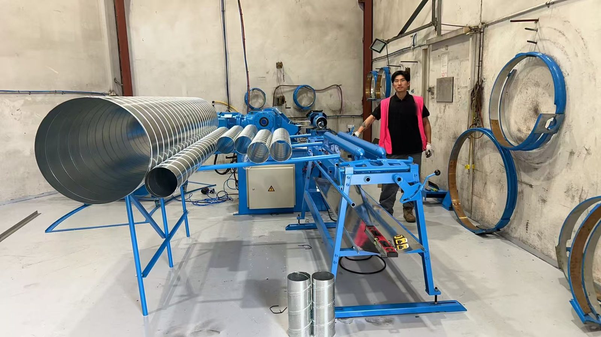

Spiral duct tooling
Forming heads for spiral tubeformers, including odd sizes
Every diameter a spiral tubeformer makes needs its own forming head. If you want to add a size, replace a worn head or make an unusual diameter such as 762 mm (30 in), we make heads to order. Tell us your machine and the sizes you need and we come back with a quotation.

What we make
- Extra diameters for a machine you already run, so you can take on sizes you currently buy in.
- Replacement heads for worn or damaged ones.
- Odd and inch sizes made to order, for example 762 mm (30 in) for UK work or inch series for North America.
- Head sets for Taokron tubeformers: SBTF-1602 (Φ80 to Φ1600 mm), SBTF-1500, SBTF-1500C and SBTF-2020 for large diameters and heavier gauges.
Running a machine from another maker?
Many shops run a tubeformer from another brand and need a size the original maker quotes slowly or expensively. How a head mounts differs from machine to machine, so we check the fit before we quote rather than promise it up front. Send us the machine make and model, a photo of one of your heads on the machine and, if you can measure it, the mounting dimensions. We will tell you plainly whether we can make a head that fits.
What to send for a quotation
- Machine make and model
- The diameters you need
- Material and thickness range (galvanised, stainless, aluminium)
- Inside or outside lockseam
- Photos of an existing head, if you have one
Questions buyers ask
Can I add a diameter to the spiral machine I already have?
Yes. Forming heads are made per diameter, so adding a size means adding a head. Tell us the machine make and model, the diameter and the material thickness, and we quote the head.
Do you make odd or inch sizes?
Yes. Heads are made to order, so sizes that are not on a standard list, such as 762 mm (30 in) or other inch sizes used in the UK and North America, can be made.
Will your heads fit a tubeformer from another maker?
Fit depends on how the head mounts on your machine, so we check it before we quote. Send the machine make and model, a photo of a head on the machine and, if you can, the mounting dimensions of one of your current heads.
What do you need for a quotation?
Machine make and model, the diameters you need, material and thickness range, and whether you run inside or outside lockseam. Photos of an existing head help.